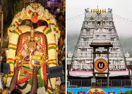
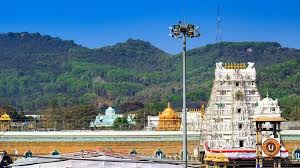
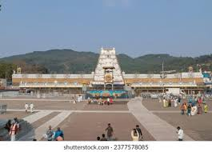
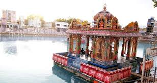
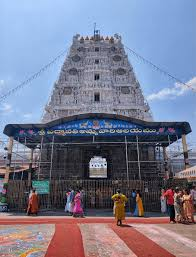
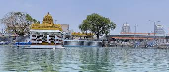
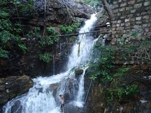
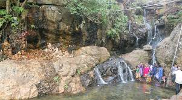
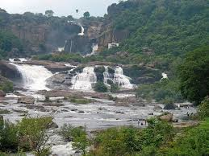
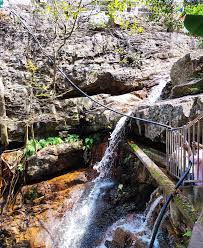

These are the tourist palces must visit in Tirupathi
Tirumala Venkateswara Temple



The Venkateswara Temple of Tirumala or Sri Venkateswara Swami Temple is a Hindu temple situated in the hills of Tirumala,
Tirupati Urban Mandal in the Tirupati district of Andhra Pradesh, India. The temple is dedicated to Venkateswara,
a form of Vishnu, who is believed to have appeared on earth to save mankind from trials and troubles of Kali Yuga.
Hence the place is also known by the name Kaliyuga Vaikuntha and the deity here is referred to as Kaliyuga Prathyaksha
Daivam. The temple is also known by other names like Tirumala Temple, Tirupati Temple and Tirupati Balaji Temple. Venkateswara
is also known by other names including Balaji, Govinda, and Srinivasa.[4] The temple is run by Tirumala Tirupati Devasthanams (TTD),
which is under control of Andhra Pradesh Government. The head of TTD is appointed by Andhra Pradesh Government.
Sri Padmavathi Temple



It is believed that Hindu goddess Mahalakshmi was born as Alamelu to Akasha Raja, the ruler of this region, and wed Venkateswara
of Tirupati. Lakshmi appeared to Venkateswara on a red Lotus flower (Padma in Sanskrit) at Alamelu mangapuram after his austere
penance for twelve years. According to tradition, the goddess manifested herself in the holy Pushkarini called Padmasarovaram
in a golden lotus. The Venkatachala Mahatyam states that the Sun-god Suryanarayana was instrumental in blossoming of the lotus
in full splendour. A temple dedicated to Suryanarayana is situated on the eastern side of the Pushkarini. The Padma Purana gives
a vivid description of the advent of the goddess and subsequent wedding with Venkateswara. The manifestation of Padmavathi occurred
in the month of Karthika on Sukla Paksha Panchami when the star Uttarashada in the ascendent. The Brahmotsavam of the goddess is
celebrated with all pomp and glory to commemorate the occasion.
Akasa Ganga




At a distance of 3 km from Tirumala Bus Station & 5 km from Tirumala Tirupati Balaji Temple, Akasa Ganga is a sacred waterfall on the
foothill of Venkatadri Tirumala. The waterfall is about 5 km from the main Tirumala Tirupati Balaji Temple and the Tirumala Nambi family
is allowed to carry the holy water from the waterfall to the temple. It is one of the popular Tirumala places to visit.
This holy theertha is found it's rendering in the Vedas and it is believed that Akasa Ganga Teertham originates from the lotus feet of Lord
Venkateswara. In ancient days, the priests of the temple carry the water all the way from this part of jungle to the temple in the morning hours.
This custom is still continued today, though limited to special occasions. Recently, water lines were laid into the Lord Venkateswara temple to carry
the water from Akasa Ganga for regular rituals of the deity.
Bathing in this water is really refreshing and is said to wash away the evils and confer good fortune. According to the belief the childless will have
children if they pray by tying cradle on the tree near Akasa Ganga following a dip in its holy waters.
The best time for visiting this place is during the rainy season, this place looks even more beautiful with greenery around and with white water gushing out of the rocks.
There are several cabs available to this place from the main temple, both shared and private. This place needs some trekking for 5-10 minutes.
Timings: 9 AM to 6 PM